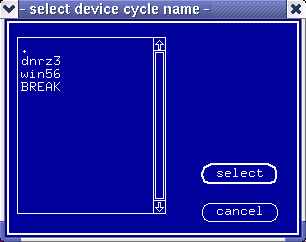

Selecting a Device Cycle for Display/Editing
In the format pins display mode the system displays the pins that have been set up in the Table Format, each with an associated device cycle (refer back to Displaying Device Cycles for Pins in Table Format). To select a different device cycle for display, you can:
- type the device cycle name directly into the DevCyc column (if you know it),
- pick the device cycle... option in the Select pulldown menu.
- select the required device cycle from the dialog box below.
